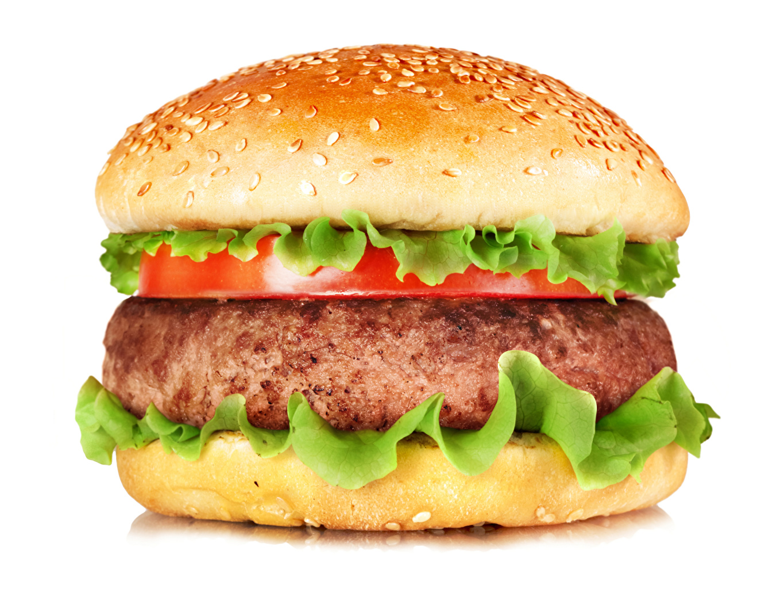

Las personas buscan nuevas formas de cocinar, salir de su zona de confort, y estas son algunas de las recetas más buscadas a nivel mundial.

Pizza
Ingredientes:
Masa de pizza, salsa de tomate, queso mozzarella, ingredientes al gusto (pepperoni, jamón, pimientos, etc.)
Preparación:
Extiende la masa, agrega la salsa, el queso y los toppings. Hornea a 220°C por 10-15 minutos hasta que la masa esté dorada y el queso derretido.

Sushi
Ingredientes:
Arroz para sushi, vinagre de arroz, pescado crudo (atún, salmón), alga nori, aguacate, pepino.
Preparación:
Cocina el arroz con vinagre y azúcar. Coloca el arroz sobre el nori, agrega pescado y vegetales, y enrolla. Se puede servir con salsa de soya y wasabi.
Tacos
Ingredientes:
Tortillas de maíz o harina, carne (pollo, cerdo, carne asada), cebolla, cilantro, salsa.
Preparación:
Cocina la carne al gusto y calienta las tortillas. Sirve la carne en las tortillas y agrega los acompañamientos como cebolla, cilantro y salsa.

Hamburguesas
Ingredientes:
Pan de hamburguesa, carne molida, queso, lechuga, tomate, cebolla, salsa.
Preparación:
Cocina la carne a la parrilla o en sartén, coloca el queso sobre la carne caliente para derretirlo. Sirve en un pan con lechuga, tomate, cebolla y salsa al gusto.
Paella
Ingredientes:
Arroz, mariscos (gambas, calamares), pollo, conejo, pimientos, guisantes, caldo, azafrán.
Preparación:
Sofríe los ingredientes (pollo, conejo, mariscos), agrega el arroz, el caldo y el azafrán. Cocina a fuego lento hasta que el arroz esté hecho y el líquido se haya absorbido.
Pasta Carbonara
Ingredientes:
Espaguetis, huevos, panceta, queso parmesano, pimienta.
Preparación:
Cocina los espaguetis. En una sartén, fríe la panceta. Bate los huevos con el queso y mezcla con la pasta caliente y panceta. Añade pimienta al gusto.
Curry
Ingredientes:
Pollo o vegetales, cebolla, ajo, jengibre, especias (curry, cúrcuma, comino), leche de coco, arroz.
Preparación:
Sofríe cebolla, ajo y jengibre. Agrega las especias y la carne o vegetales. Cocina con leche de coco hasta que los sabores se integren. Sirve con arroz.
Biryani
Ingredientes:
Arroz, pollo o cordero, cebolla, yogur, especias (cardamomo, comino, azafrán).
Preparación
Cocina la carne con especias, cebolla y yogur. En una olla separada, cocina el arroz con algunas especias. Combina ambos y deja reposar para que los sabores se mezclen.
Ramen
Ingredientes:
Fideos de ramen, caldo (pollo, cerdo, o miso), huevo cocido, cebollín, alga nori, carne (cerdo o pollo).
Preparación:
Cocina los fideos y prepara el caldo. Sirve los fideos en un bol con el caldo caliente, agrega carne, huevo, cebollín y nori.
Croissant
Ingredientes:
Harina, mantequilla, levadura, azúcar, sal, leche.
Preparación:
Mezcla los ingredientes para hacer la masa. Deja reposar y luego forma el croissant. Deja que la masa fermente y hornea a 180°C hasta que esté dorada.